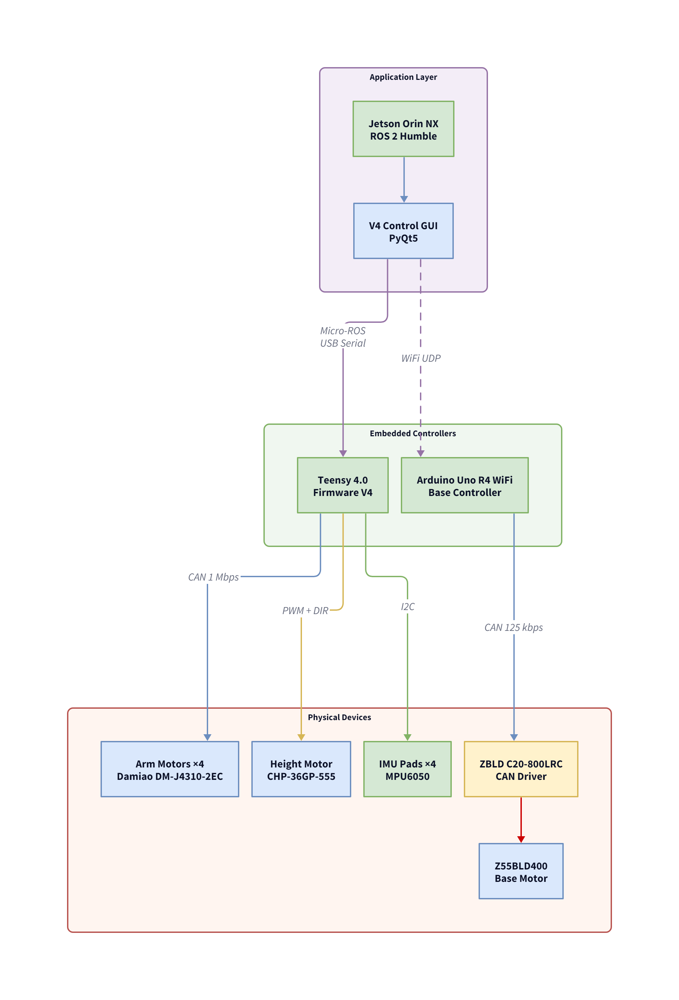

5.2.5.3 Electrical Integration
This section documents the motor and actuator selection process, power distribution architecture, and CAN bus communication topology for the Upper Mechanism. Each design decision is traced back to a specific failure mode or performance requirement encountered during integration testing.
5.2.5.3.1 Motor & Actuator Selection
With the 2-DOF coaxial concept selected, the next engineering challenge was identifying a motor that satisfies the dual requirement established in the post-interim review: impact resilience (BLDC architecture) and precise closed-loop position control (FOC with encoder feedback).
Field Oriented Control (FOC) Requirement
Standard BLDC motors used in drones and RC vehicles are optimised for high-RPM propeller driving. Their Electronic Speed Controllers (ESCs) employ trapezoidal commutation, which prioritises speed but produces significant torque ripple and reduced torque at low speeds. For a robotic joint that must deliver consistent, controllable torque across its entire speed range, including holding position at zero speed, Field Oriented Control (FOC) is required. FOC achieves this by performing real-time vector control of the motor's magnetic field, necessitating precise rotor position feedback via an encoder.
Iteration 1: ODrive V3.6 + 360KV Motor (Abandoned)
The initial motor controller platform comprised an ODrive V3.6 dual-axis FOC controller paired with a 360KV outrunner BLDC motor fitted with a hall-effect encoder. While the ODrive provided the required FOC capability, physical testing revealed three critical shortcomings:
| Issue | Root Cause | Impact |
|---|---|---|
| Position jitter | Hall-effect encoder's coarse resolution (6 states/revolution) introduced electrical noise into the FOC loop | Unpredictable oscillation during position hold; unusable for precise strike positioning |
| No absolute position | Single incremental encoder loses position reference on every power cycle | Mandatory recalibration sequence before each session; unacceptable for operational use |
| Physical bulk | Separate controller board, motor, and encoder required individual mounting | Assembly too large to fit within the coaxial arm housing; violated compactness requirement |
These shortcomings collectively demonstrated that a discrete motor-controller-encoder assembly was unsuitable for the application. The search criteria were refined to specifically target integrated BLDC actuators with built-in FOC controllers, high-resolution encoders, and a standardised communication interface.
Iteration 2: Damiao DM-J4310-2EC (Selected)
The Damiao DM-J4310-2EC integrated BLDC actuator satisfied all refined selection criteria:
| Feature | Specification | Benefit |
|---|---|---|
| Dual encoders (2EC) | Dual 14-bit single-turn magnetic absolute encoders (motor-side + output-side); internal DSP accumulates multi-turn position via 2EC mode | Maintains absolute position across power cycles; eliminates recalibration |
| Integrated FOC controller | On-board MCU with Position-Speed Mode | Direct CAN bus commands; no external controller board required |
| Native torque output | 7 N·m peak (3 N·m rated) | With the 10:1 internal planetary and 3:1 external spur gear (30:1 total), output joint torque far exceeds the application requirement |
| CAN bus interface | 1 Mbps CAN 2.0B with configurable frame IDs | Parallel bus wiring; scalable to 4 motors on a single bus |
Torque Verification
To verify that the DM-J4310-2EC provides sufficient torque for the application, three component torque calculations were performed. The first was the static torque: the gravitational load of the arm assembly (training stick, padding, and mounting hardware) at the maximum moment arm length. The second was the acceleration torque: the torque required to achieve the target angular acceleration (90° in ≤ 0.25 s) given the arm's moment of inertia. The third was the aerodynamic drag torque: the resistive torque from air resistance on the training stick at peak angular velocity.
The sum of all three components, multiplied by a 1.5× safety factor, confirmed that the DM-J4310-2EC's output torque (after the 30:1 total gear reduction) exceeds the application requirement. The complete derivations, numerical values, and final safety margin are presented in Appendix 1 — Torque Calculations.
5.2.5.3.3 Dual-Rail Power Architecture
The electrical system employs a dual-rail power architecture, separating the high-current motor bus from the logic-level compute bus.
24V Motor Bus
The motor bus is powered by a Mean Well LRS-200-24 (200W, 24V / 8.8A) switched-mode PSU. Power is distributed through a common terminal block to all four Damiao DM-J4310-2EC motors (connected in parallel, each rated for 24V nominal operation) and the Cytron MDDS10 height motor driver.
At peak demand, with four motors simultaneously executing a snap-back command, the instantaneous current draw can approach the PSU's rated capacity. The PSU's internal current-limiting circuit provides a hardware-level ceiling, but the firmware's dI/dt safety layer (see Multi-Layered Safety Architecture) ensures that current spikes are detected and mitigated before reaching this hardware limit.

Isolated 12V Logic Rail
The NVIDIA Jetson Orin NX compute module and the Teensy 4.0 microcontroller are powered from a dedicated 12V supply, electrically isolated from the 24V motor bus. This isolation addresses a specific failure mode: during rapid height motor deceleration, the geared DC motor (driven by the Cytron MDDS10) injects regenerative back-EMF onto the 24V bus. When these transients exceed the PSU's overvoltage protection (OVP) threshold (approximately 28V), the supply trips and all devices on that rail lose power simultaneously.
On a single-rail architecture, this OVP trip would reboot the Teensy (losing encoder references and active safety state) and the Jetson (losing the ROS 2 graph and GUI session) during active sparring, an unacceptable failure mode for a system with exposed 3D-printed moving parts. The dual-rail isolation guarantees that motor bus disturbances cannot propagate to the compute and control subsystems. The full OVP failure analysis and the software ramp-down mitigation are documented under 5.2.3 Height Adjustment and Troubleshooting §6: PSU OVP Trip.

5.2.5.3.2 CAN Bus Communication
All four Damiao motors communicate with the Teensy 4.0 microcontroller via a CAN 2.0B bus operating at 1 Mbps. The bus is configured in a parallel topology, with each motor's CAN_H and CAN_L terminals wired in parallel, with a single 120 Ω termination resistor bridging CAN_H and CAN_L.
Motor Address Map
| Motor Base ID | Motor | Assignment | Axis |
|---|---|---|---|
0x01 |
Motor 1 (M1) | Left Arm | Roll (outer housing rotation) |
0x02 |
Motor 2 (M2) | Left Arm | Pitch (inner shaft via bevel gear) |
0x03 |
Motor 3 (M3) | Right Arm | Roll (outer housing rotation) |
0x04 |
Motor 4 (M4) | Right Arm | Pitch (inner shaft via bevel gear) |
| Note: Motor Base ID is the value stored in motor configuration (0x01–0x04). CAN command frames are transmitted as 0x100 + Motor Base ID (i.e. 0x101–0x104). | |||
CAN Transmission Strategy: Sparse Edge-Trigger
To minimise bus congestion on a shared 4-motor bus, the firmware employs a Sparse Edge-Trigger with 100 ms Keep-Alive strategy. Under this scheme, a CAN command frame is transmitted only when the target position changes by more than 0.01 rad from the previously commanded value, thereby eliminating redundant frames during static hold. If no edge-trigger fires for 100 ms, a periodic telemetry frame is sent to maintain bus presence and confirm motor responsiveness.
This strategy reduces average bus utilisation from approximately 80% (continuous polling at 200 Hz × 4 motors) to under 15% during typical sparring, providing headroom for burst traffic during rapid multi-motor strike sequences.
CAN Frame Structure — Position-Speed Command Mode
The Damiao DM-J4310-2EC motors operate in Position-Speed mode, where each 8-byte CAN command frame encodes a target position and a maximum velocity for the trajectory. The motor's internal controller handles trajectory interpolation; the host (Teensy) only sends the desired endpoint and speed constraint.
The motor responds with a feedback frame containing actual
position, velocity, and current, which the Teensy parses and
publishes as the 21-double /motor_feedback payload
via micro-ROS.